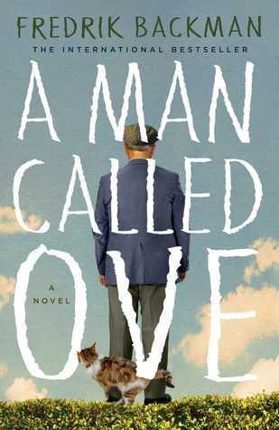

"A Man Called Ove"
- Read on 2016-01-01
- Rating: ️️️️️
- Format: 🎧 (9 hours 9 minutes)
Maybe this is too self-referential, but I have to believe that everybody can see a bit of themself in Ove. I appreciate his practical view/manner at undertaking a task, as well as how he is willing to learn a new skill. It's a great story. I also enjoyed how the author told the story - in a way that slowly revealed more of the past as it told more of the current story. I feel like it made the story easier to approach. Additionally, I found myself laughing out loud at this book, which is always a nice treat. All said, I flew through this book, and loved it.
- Prior: Winter's Heart
- Next: Harry Potter and the Cursed Child